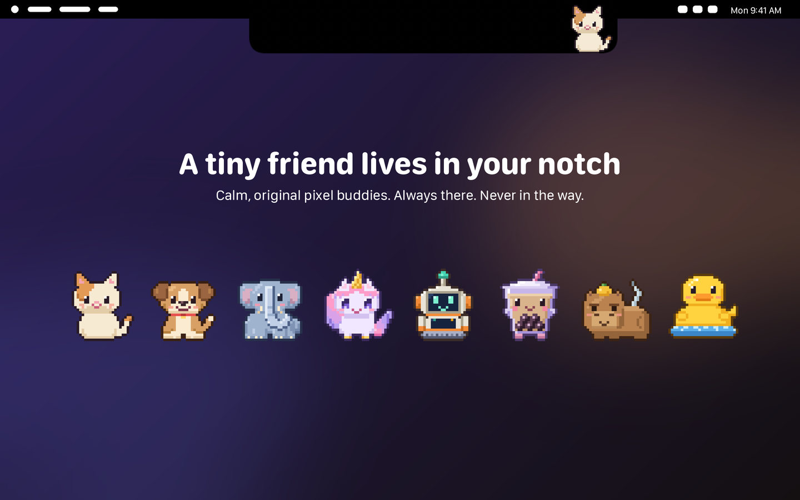
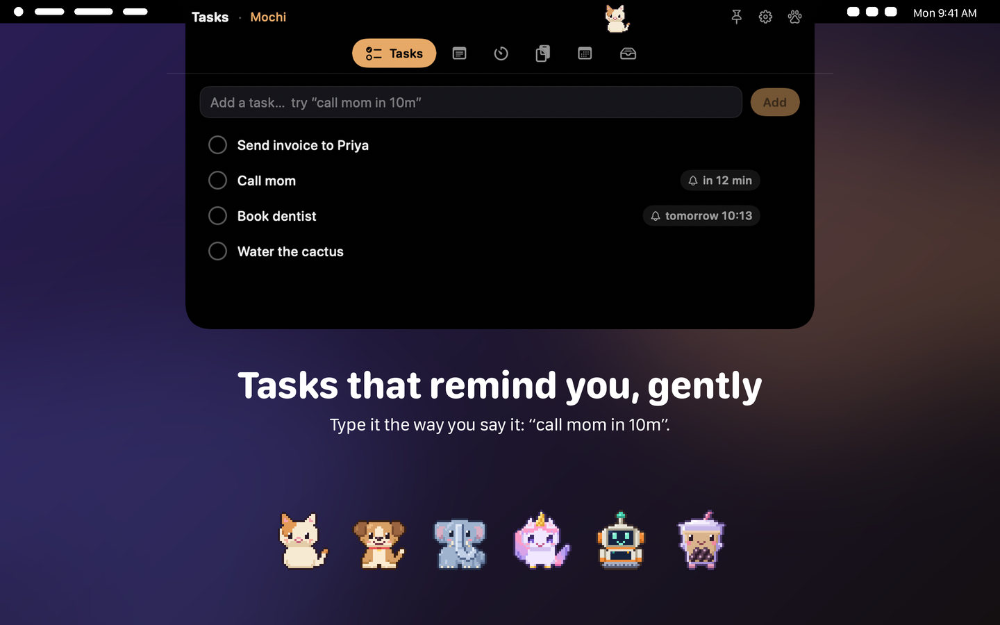

A buddy for your Mac
Your notch, with a friend in it.
Notch Pals is a calm pixel-art buddy that lives in your MacBook’s notch. It walks, naps and tunnels through the notch. Click it and six quiet little tools open up.
- Mac App Store
- $4.99 one-time
- macOS 14 or later
- No data collected

Six tools, one click away
Click your buddy and a small panel opens right under the notch. Press Esc or move away and it tucks itself back in.
-
Tasks
To-do + reminders
Type it the way you say it: “call mom in 10m”, “dentist tomorrow 9am”. Anything with a time becomes a gentle reminder, with Done and Snooze right on the notification.
-
Notes
Notes + sticky notes
Quick, searchable notes that save as you type. Pin them, colour them, or stick one to your desktop as a floating sticky.
-
Timer
Focus + break and water nudges
Focus sessions with an optional Pomodoro rhythm, plus kind nudges to take a break or sip some water. Your buddy celebrates when you finish.
-
Clipboard
Last 5, opt-in, memory only
Your last five copies, kept in memory only and never written to disk. Passwords and private copies are skipped. It stays off until you turn it on.
-
Calendar
Opt-in, meeting heads-up + Join
See what’s next today and tomorrow. Get a heads-up before a meeting and join Zoom, Meet, Teams or Webex in one click. Add events in plain words.
-
Shelf
Drag files onto the notch
Drop files on the notch, keep them close, drag them out when you are ready. Your originals never move.

24 original buddies, one at a time
Cats and robots, a capybara, a boba cup, a rubber duck, a tiny dragon, a floppy disk and more. Each has its own personality and a little life of its own. Switch any time, or let a new one surprise you each day.
- Still or breathing almost all the time
- Never moves while you type, and sleeps when you step away
- Hides when you share your screen or go fullscreen
- Respects Reduce Motion
- No streaks, no guilt, no sounds, nothing to feed

Private by design
- No account.
- No network.
- No tracking.
Everything stays on your Mac, and the app runs in the Mac App Store sandbox. Notch Pals collects no data at all. Read the full privacy policy.
Support
Something not working, or an idea for a new buddy? Send an email and a real person will read it.
Frequently asked questions
How do I open the tools?
Click your buddy. You can also press Control+Option+B, or choose the paw icon in the menu bar.
The panel has six tabs: Tasks, Notes, Timer, Clipboard, Calendar and Shelf. Press Esc, click somewhere else, or move the mouse away to close it. To use the Shelf, drag a file onto the notch.
How do I pause the buddy?
Click the paw icon in the menu bar, choose Pause Buddy, then pick For 1 hour, Until tomorrow or Until I resume. You can also press Control+Option+P to pause and resume.
While paused, all animation stops, but your tools stay reachable. Giving a talk or recording your screen? Choose Presenting (hide buddy) in the same menu. The buddy also hides by itself in fullscreen apps.
Why does it ask for Calendar or clipboard access?
Only when you use the feature that needs it, and both are optional.
Calendar lets Notch Pals show your upcoming events, warn you before meetings and add events you create. Events are read on your Mac and are not copied anywhere else.
Clipboard is off until you press “Start remembering”. It then keeps your last five copies in memory only. They are never written to disk and disappear when the app quits. Items marked private by the app that created them, such as passwords from a password manager, are never recorded. If your Mac is set to ask before apps read the clipboard, Notch Pals pauses clipboard reading.
Notifications are used for reminders and timer alerts. You can change any permission in System Settings > Privacy & Security.
How do I delete my data?
Inside the app you can delete tasks, notes and sticky notes, clear completed tasks, and use Clear all on the Shelf and in Clipboard. Everything is stored only on your Mac.
Deleting the app does not necessarily delete its data, because macOS can keep the app’s sandbox container. To remove everything, quit Notch Pals, then in Finder choose Go > Go to Folder, enter ~/Library/Containers/app.notchpals.mac and move that folder to the Trash. Finder may show the folder as “Notch Pals”.
Does it work on Macs without a notch?
Yes. Notch Pals works on any Mac running macOS 14 or later. On a MacBook with a notch your buddy lives beside it. On other Macs, and on external displays, it sits at the top centre of the screen.